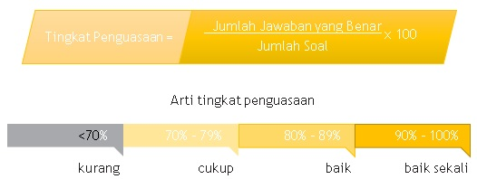

PG PAUD Universitas Terbuka
Tes Formatif 2
Cocokkanlah jawaban Anda dengan Kunci Jawaban Tes Formatif 1 yang terdapat di bagian akhir modul ini. Hitunglah jawaban yang benar. Kemudian, gunakan rumus berikut untuk mengetahui tingkat penguasaan Anda terhadap materi Kegiatan Belajar 1.

Apabila mencapai tingkat penguasaan 80% atau lebih, Anda dapat meneruskan dengan Kegiatan Belajar 2. Bagus! Jika masih di bawah 80%, Anda harus mengulangi materi Kegiatan Belajar 1, terutama bagian yang belum dikuasai.
Licensed under the Creative Commons Attribution Share Alike License 4.0